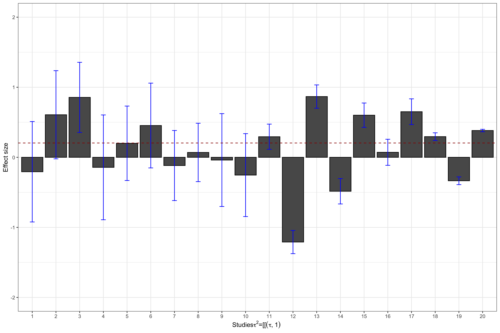
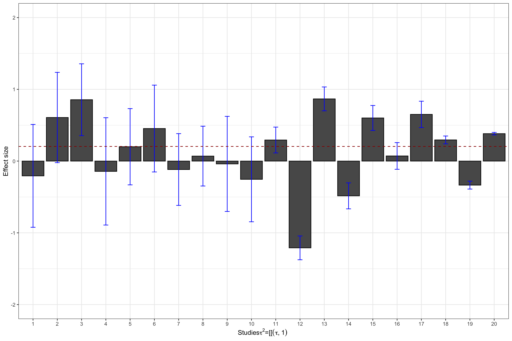

Chapter 13 Meta-analysis and Publication Bias
When several research teams work on a similar topic, they obtain and publish several estimates for the same program of for similar programs. For example, teams of doctors regularly test the same treatment on different samples or populations in order to refine the estimated effect. Similarly, economists report on the effects of similar types of programs (Conditional and Unconditional Cash Transfers, Job Training Programs, microcredit, etc) implemented in different countries.
Meta-analysis aims at summarizing and synthetizing the available evidence with two main goals in mind:
- Increasing precision by providing an average estimated effect combining several estimates
- Explaining variations in treatment effectiveness by relating changes in effect size to changes in sample characteristics.
One key issue that meta-analysis has to face – actually, we all have to face it, meta-analysis simply makes it more apparent – is that of publication bias. Publication bias is due to the fact that referees and editors have a marked preference for publishing statistically significant results. The problem with this approach is that the distribution of published results is going to be censored on the left: we will have more statistically significant results in the published record, and as a consequence, the average published result will be an upward biased estimate of the true treatment effect in the population. This is potentially a very severe problem if the amount of censoring due to publication bias is large. Eventually, this hinges on the true distribution of treatment effects: if it is centered on zero or close to zero, we run the risk of having very large publication bias.
In this chapter, I present first the tools for meta-analysis, and I then move on to testing and correcting for publication bias. Most of the material presented here stems from the reference book by Hedges and Olkin. When needed, I update this book with new references that I then cite. the R code comes mainly from a wonderful set of slides explaining of the metafor package works.
13.1 Meta-analysis
There are several approaches and refinements to meta-analysis. In this section, I am going to present only the most important ones. I’ll defer the reader to other more specialized publications if needed.
I first present the basics of meta-analysis: the constitution and structure of the sample. Second, I present the problems of the intuitive “vote-counting” method. Third, I present the methods used when treatment effects are homogeneous across studies, called fixed effects models. Fourth, I move to the methods used when effects are heterogeneous across studies, or random effects models, and the tests used to decide whether we are in a fixed or random effects framework. Fifth, I present meta-regression, that tries to capture treatment effect heterogeneity by including covariates. Finally, I present constantly updated meta-analysis, a way to aggregate results of individual studies as they come.
13.1.1 Basic setting
The basic setting for a meta-analysis is that you have access to a list of estimates for the effect of a given program and for their precision. These estimates come from the literature, searching published and unpublished sources alike. This data is usually collected after an extensive search of bibliographic databases. Then, one has to select among all the studies selected by the search the ones that are actualy relevant. This is the most excruciating part of a meta-analysis, since a lot of the studies selected by hte search algorithm are actually irrelevant. Finally, one has to extract from each relevant paper an estimate of the effect of the treatment and of its precision. In general, one tries to choose standardized estimates such as the effect size (see Section 2.1.6 for a definition) and its standard error. After all this process, we should end up with a dataset like: \(\left\{(\hat{\theta}_k,\hat{\sigma}_k)\right\}_{k=1}^N\), with \(\hat{\theta}_k\) the estimated effect size, \(\hat{\sigma}_k\) its estimated standard error, and \(N\) the number of included studies.
N.sample <- c(100,1000,10000,100000)
N.plot.ES.CLT <- c(10,7,2,1)
data.meta <- data.frame(ES=numeric(),
se=numeric())
se.ww.CLT.ES <- function(N,v1,v0,p){
return(sqrt((v1/p+v0/(1-p))/N)/v0)
}
for (k in 1:length(N.sample)){
set.seed(1234)
simuls.ww[[k]]$se.ES <- se.ww.CLT.ES(N.sample[[k]],simuls.ww[[k]][,'V1'],simuls.ww[[k]][,'V0'],simuls.ww[[k]][,'p'])
test.ES <- simuls.ww[[k]][sample(N.plot.ES.CLT[[k]]),c('ES','se.ES')]
test.ES$N <- rep(N.sample[[k]],N.plot.ES.CLT[[k]])
data.meta <- rbind(data.meta,test.ES)
}
data.meta$id <- 1:nrow(data.meta)
#data.meta$N <- factor(data.meta$N,levels(N.sample))
ggplot(data.meta, aes(x=as.factor(id), y=ES)) +
geom_bar(position=position_dodge(), stat="identity", colour='black') +
geom_errorbar(aes(ymin=ES-qnorm((delta.2+1)/2)*se.ES, ymax=ES+qnorm((delta.2+1)/2)*se.ES), width=.2,position=position_dodge(.9),color='blue') +
geom_hline(aes(yintercept=ES(param)), colour="#990000", linetype="dashed")+
xlab("Studies")+
ylab("Effect size")+
theme_bw()Figure 13.1: Example data set: effect sizes and confidence intervals with \(\delta=\) 0.95
Figure 13.1 shows the resulting sample. I’ve selected 10 studies with \(N=\) 100, 7 studies with \(N=\) 1000, 2 studies with \(N=\) 10^{4}, and 1 study with \(N=\) 10^{5}. The studies are represented in that order, mimicking the increasing sample size of studies that accumulate evidence on a treatment, probably with studies with a small sample size at first, and only large studies at the end for the most promising treatments.
13.1.2 Why vote-counting does not work
Vote-counting is an alternative to weighted average or meta-regression. The term, coined by Light and Smith (1971), refers to the practice of counting the number of studies that fall under one of three categories:
- Significant and positive,
- Insignificant,
- Significant and negative.
A vote-counting approach concludes that there is evidence in favor of the treatment when the majority of effects fall in the first category, that there is no evidence that the treatment has an impact whenthe majority of studies fall in the second category, and that there is evidence that the treatment is defavorable when the majority of studies fall in the third category. In general, majority is evaluated at 33%.
The main problem with the vote counting approach is that it does not give more weight to more precise studies. As a consequence, there is a very realistic possibility that the probability of finding the truth decrease as we add more studies to the meta-analysis.
Let’s see how this could happen with a simulation taken from HEdges and Olkin’s book. Let \(p\) be the probaility that a given result is significant and positive. \(p\) depends on the sample size \(n\) of the study, and on the true treatment effect, \(\theta\):
\[\begin{align*} p & = \int_{C_{\alpha}}^{\infty}f(t;\theta,n), \end{align*}\]where \(f\) is the density of the test statistic \(T\) used to evaluate whether the effect is significant or not, and \(C_{\alpha}\) is the critical value of the test \(T\). If \(n\) and \(\theta\) are constant over studies (for simplicity), the process of accumulating significant results can be modelled as a binomial with parameter \(p\). The probability that over \(K\) studies, we have a proportion of significant results larger than a pre-specified threshold (let’s say \(C_0\)) is equal to:
\[\begin{align*} \Pr(\frac{X}{K}>C_0) & = \sum_{k=\text{int}(C_{0}k)+1}^{K}\left(\begin{array}{c}K\\k\end{array}\right)p^k(1-p)^{K-k}, \end{align*}\]where \(\text{int}(a)\) is the greatest integer larger or equal to \(a\) and \(0\leq C_0\leq 1\). In order to use this formula, we simply have to choose a test. Let’s choose the two-sided t-test of a zero treatment effect in an RCT with equal tozes for treated and control groups. In that case, \(p\) is simply the power of the test. In Chapter 7, we have derived a formula for the power of this test when \(N\) is large:
\[\begin{align*} \kappa & = \Phi\left(\frac{\beta_A}{\sqrt{\var{\hat{E}}}}-\Phi^{-1}\left(1-\frac{\alpha}{2}\right)\right), \end{align*}\]with \(\var{\hat{E}}=\frac{C(\hat{E})}{N}\) and \(C(\hat{E})\) the variance of the estimator across sampling replications. Let’s make the simplifying assumption that the treatment effect is constant, so that the variance of the estimator is basically the variance of the outcomes. Let’s also assume that we are working with effect sizes, so that our outcomes are normalized to have mean zero and variance one. Under these assumptions, \(C(\hat{E})=1\) and we can implement the power formula:
PowerTwoside <- function(betaA,alpha,N,CE=1){
return(pnorm(-betaA/sqrt(CE/N)-qnorm(1-alpha/2))+pnorm(betaA/sqrt(CE/N)-qnorm(1-alpha/2)))
}
PowerTwosideStudent <- function(betaA,alpha,N,CE=1){
return(pt(-betaA/sqrt(CE/N)-qnorm(1-alpha/2),df=N-1)+pt(betaA/sqrt(CE/N)-qnorm(1-alpha/2),df=N-1))
}
VoteCounting <- function(betaA,C0,K,...){
return(pbinom(q=C0*K,size=K,prob=PowerTwosideStudent(betaA=betaA,...),lower.tail = FALSE))
}
PowerTwosideStudent(betaA=0.1,alpha=0.05,N=300)
VoteCounting(C0=.33,K=3000,betaA=0.1,alpha=0.05,N=300)
Sample.size <- c(20,50,100,200,300)
BetaA <- seq(0.1,1.5,by=0.1)
K.list <- c(10,20,30,50,100,1000)
power.vote <- data.frame("Power"= 0,'BetaA'= 0,'N'= 0,'K'= 0)
#power.vote <- sapply(BetaA,VoteCounting,C0=.33,K=K.list[[1]],alpha=0.05,N=Sample.size[[1]])
#power.vote <- cbind(power.vote,BetaA,Sample.size[[1]],K.list[[1]])
for (j in (1:length(K.list))){
for (k in (1:length(Sample.size))){
power.vote.int <- sapply(BetaA,VoteCounting,C0=.33,K=K.list[[j]],alpha=0.05,N=Sample.size[[k]])
power.vote.int <- cbind(power.vote.int,BetaA,Sample.size[[k]],K.list[[j]])
colnames(power.vote.int) <- c('Power','BetaA','N','K')
power.vote <- rbind(power.vote,power.vote.int)
}
}
power.vote <- power.vote[-1,]
power.vote$K.int <- power.vote$K
power.vote$K <- as.factor(power.vote$K)
#ggplot(data=filter(power.vote,K==10),aes(x=N,y=Power,group=as.factor(BetaA),shape=as.factor(BetaA),color=as.factor(BetaA)))+
# geom_line()+
# geom_point()
ggplot(data=filter(power.vote,BetaA==0.1),aes(x=N,y=Power,group=K,shape=K,color=K))+
geom_line()+
geom_point()+
xlab("N (BetaA=0.1)")+
ylab("Detection probability of the vote counting rule")+
theme_bw() +
scale_fill_discrete(name="K")
ggplot(data=filter(power.vote,BetaA==0.2),aes(x=N,y=Power,group=K,shape=K,color=K))+
geom_line()+
geom_point()+
xlab("N (BetaA=0.2)")+
ylab("Detection probability of the vote counting rule")+
theme_bw()Figure 13.2: Detection probability of the vote counting rule
Figure 13.2 shows that the vote counting rule has a very inconvenient property: when the power of the test is lower than 33%, the probability that the vote counting rule detects a true effect decreases with the number of studies included in the meta-analysis, and converges to zero when the number of studies gets large.
For example, when \(N=100\) and \(\beta_A=0.1\), the probability of detecting the effect using the vote counting method is equal to 0.076 with \(K=10\) studies and decreases to 0.043 when \(K=20\), and 0 when \(K=100\). The pattern is reverse for more powerful studies, such as when \(N=300\) and \(\beta_A=0.1\) or when \(N=100\) and \(\beta_A=0.2\). The intuition for this result is that the vote counting method does not average out the sampling noise in each individual study.
13.1.3 Meta-analysis when treatment effects are homogeneous: the fixed effects approach
The key idea of meta-analysis with fixed effects is to combine the effect size estimates stemming from different studies, weighing them by their relative precision.
Under some assumptions, the estimator \(\bar{\theta}\) converges to the true effect of the treatment. Let’s delineate these assumptions.
Assumption 13.2 imposes that all the studies have been drawn from the same population, where the treatment effect is a constant.
Assumption 13.3 imposes that all the studies estimates are independent from each other. That means that they do not share sampling units and that they are not affected by common shocks.
Under these assumptions, we can show two important results.
Theorem 13.1 says that the error we are making around the true effect of the treatment goes to zero as the sample size in each study decrease. This is great: aggregating the studies is thus going to get us to the truth.
Check if this is a consequence of Kolmogorov’s Law of Large Numbers.
Theorem 13.2 shows that the distribution of the weighted meta-analytic estimator converges to a normal, which is very convenient in order to compute sampling noise. In order to obtain an estimator \(\hat{\sigma}^2\) of the variance of the meta-analytic estimator, we can simply replace the individual variance terms by their estimates: \(\hat{\sigma}_k^2\).
wmae <- function(theta,sigma2){
return(c(weighted.mean(theta,(1/sigma2)/(sum(1/sigma2))),1/sum(1/sigma2)))
} The estimated treatment effect size with our sample is 0.19 \(\pm\) 0.02. A very simple way to implement such an estimator in R is to use the rma command of the metafor package.
data.meta$var.ES <- data.meta$se.ES^2
meta.example.FE <- rma(yi = data.meta$ES,vi=data.meta$var.ES,method="FE")
summary(meta.example.FE)##
## Fixed-Effects Model (k = 20)
##
## logLik deviance AIC BIC AICc
## 16.1375 12.7060 -30.2751 -29.2793 -30.0529
##
## Test for Heterogeneity:
## Q(df = 19) = 12.7060, p-val = 0.8533
##
## Model Results:
##
## estimate se zval pval ci.lb ci.ub
## 0.1950 0.0079 24.6975 <.0001 0.1795 0.2104 ***
##
## ---
## Signif. codes: 0 '***' 0.001 '**' 0.01 '*' 0.05 '.' 0.1 ' ' 1As seen above, the metafor package yields a meta-analytic estimate of 0.19 \(\pm\) 0.02, as we have found using the weighted meta-analytic estimator.
It is customary to present the results of a meta-analysis using a forest plot. A forest plows all the individual estimates along with the aggregated estimate. Figure 13.3 presents the forest plot for our example using the very convenient forest function in the metafor package:
forest(meta.example.FE,slab = paste('Study',data.meta$id,sep=' '),xlab='Estimated Meta-analytic Parameter')
Figure 13.3: Example data set: forest plot
13.1.4 Meta-analysis when treatment effects are heterogeneous: the random effects approach
One key assumption that we have just made so far is that of homogeneous treatment effect. We have worked under the assumption that each study was drawn from the same population, where the treatment effect is a constant. Why would the treatment effects differ in each study?
- We do not study exactly the same treatment, but a family of similar treatments. Each individual study covers a particular iteration of the treatment, each with its idiosyncratic parameterization. The particular value of the transfer in a Cash Transfer program, or of the conditions to receive it, or the length of payment, whether it is in one time or over some period, might make a difference, for example. The same is true for Job Training Programs, Payments for Environmental Services, microcredit, graduation programs, nudges, etc. Actually, most programs that economists study differ from one implementation to the next. In psychology and medecine, most treatments are accompanied by a rigorous protocol that makes them much more homogeneous.
- The population on which the treatment is applied varies. For example, similar Job Training Programs or microcredit initiatives might have very different outcomes depending on the business cycle. Education interventions might have very different effects depending on the background of the students on which they are tested. A drug might interact with patients’ phenotype and genotype to generate different effects, and the populations from which the experimental samples are drawn do not have to be similar. As an extreme example, think of a vaccine tested in a population where the prevalence of a disease is null. The treatment effect is zero. Now, test the vaccine in a population where the disease is endemic: the treatment effect might be huge.
When each study draws a treatment effect from a distinct population, meta-analysis has to take into account that treatment effects are heterogeneous. The main consequence of treatment effect heterogeneity is that the weighting approach we have used so far underestimates the uncertainty around the true effect, since it does not acknowledge that there is additional variation within each study.
There are two main ways to account for heterogeneity in meta-analysis:
- Random effects allowing for additional random noise in each study.
- Meta-regression trying to capture the heterogeneity in treatment effects with observed covariates.
In this section, we study the random effects estimator, and the next section will cover the meta-regression estimator. Before implementing the random effects estimator, we need to decide whether there is heterogeneity in treatment effects or not.
Generate noise right now and show the plot.
13.1.4.1 Estimating the heterogeneity of treatment effects
A necessary first step is to estimate the variance in treatment effects that is due to treatment effect heterogeneity, beyond sampling noise. The observed effect size estimate for a given study \(k\) is modelled as follows:
\[\begin{align*} \hat{\theta}_k & = \alpha + \epsilon_k + \nu_k, \end{align*}\]where \(\epsilon_k\) is due to sampling noise and \(\nu_k\) is due to the heterogeneity in effect sizes across sites, while \(\alpha\) is the average of the effect size accross all populations. We denote the variance of \(\nu_k\) as \(\tau^2\). \(\nu_k\) is the random effect that gives the random effects approach its name.
There are several ways to estimate this variation. I’m gooing to start with the most intuitive one, Hedges’ estimator, and I’ll then move on to the other ones available. I’ll conclude with the formal statistical tests used to decide whether treatment effects are heterogeneous or not.
13.1.4.1.1 Hedges’ estimator of treatment effect heterogeneity
Since Hedges, \(\tau^2\) is estimated as the residual variance in effect sizes that is not explained by sampling noise. In order to compute this estimator, first estimate the overall variance in \(\hat{\theta}_k\), then estimate the component of the variance due to sampling noise and finally take the difference between the two. Hedges’ estimator of the overall variance in effect sizes is:
\[\begin{align*} \hat{\tau}^2 & = \hat{\sigma}^2_{tot}-\hat{\sigma}^2_{\epsilon}, \end{align*}\]with
\[\begin{align*} \hat{\sigma^2_{tot}} & = \frac{1}{N}\sum_{k=1}^N(\hat{\theta}_k-\bar{\theta}_u)^2\\ \bar{\theta}_u & = \frac{1}{N}\sum_{k=1}^N\hat{\theta}_k \\ \hat{\sigma^2_{\epsilon}} & = \frac{1}{N}\sum_{k=1}^N\hat{\sigma}_k^2. \end{align*}\]Let’s first define a few functions to compute each part:
tau.2 <- function(theta,vartheta){
return(var(theta)-mean(vartheta))
}
tau.2.theta <- tau.2(data.meta$ES,data.meta$se.ES^2)Our estimate of \(\tau^2\) in our example is thus -0.03. This estimate is small, suggesting that there is no additional variance in the treatment effects on top of sammling variation, as we know is the case and has already been suggested by the results of the \(Q\) statistic. Let’s now create a new sample of effect sizes where we add noise to each estimate stemming not from sampling, but from heterogeneity in treatment effects across sites and studies.
tau <- c(0.5,1)
set.seed(1234)
data.meta$theta.1 <- data.meta$ES + rnorm(nrow(data.meta),mean=0,sd=tau[[1]])
data.meta$theta.2 <- data.meta$ES + rnorm(nrow(data.meta),mean=0,sd=tau[[2]])I’ve simulated two new vectors of estimates for \(\theta\), both obtained adding a mean-zero normally distributed noise to the initial estimates of \(\theta\), one with a standard deviation of 0.5 and the other of 1. Let’s visualize our two new datasets:
ggplot(data.meta, aes(x=as.factor(id), y=ES)) +
geom_bar(position=position_dodge(), stat="identity", colour='black') +
geom_errorbar(aes(ymin=ES-qnorm((delta.2+1)/2)*se.ES, ymax=ES+qnorm((delta.2+1)/2)*se.ES), width=.2,position=position_dodge(.9),color='blue') +
geom_hline(aes(yintercept=ES(param)), colour="#990000", linetype="dashed")+
xlab(expression(paste('Studies',tau^2,'=',0,sep=' ')))+
ylab("Effect size")+
theme_bw()+
ylim(-2,2)
ggplot(data.meta, aes(x=as.factor(id), y=theta.1)) +
geom_bar(position=position_dodge(), stat="identity", colour='black') +
geom_errorbar(aes(ymin=theta.1-qnorm((delta.2+1)/2)*se.ES, ymax=theta.1+qnorm((delta.2+1)/2)*se.ES), width=.2,position=position_dodge(.9),color='blue') +
geom_hline(aes(yintercept=ES(param)), colour="#990000", linetype="dashed")+
xlab(expression(paste('Studies',tau^2,'=',tau[[1]],sep=' ')))+
ylab("Effect size")+
theme_bw()+
ylim(-2,2)
ggplot(data.meta, aes(x=as.factor(id), y=theta.2)) +
geom_bar(position=position_dodge(), stat="identity", colour='black') +
geom_errorbar(aes(ymin=theta.2-qnorm((delta.2+1)/2)*se.ES, ymax=theta.2+qnorm((delta.2+1)/2)*se.ES), width=.2,position=position_dodge(.9),color='blue') +
geom_hline(aes(yintercept=ES(param)), colour="#990000", linetype="dashed")+
xlab(expression(paste('Studies',tau^2,'=',tau[[2]],sep=' ')))+
ylab("Effect size")+
theme_bw()+
ylim(-2,2) 

Figure 13.4: Datasets with treatment effect heterogeneity
Let’s see now how Hedge’s estimator performs:
tau.2.theta.1 <- tau.2(data.meta$theta.1,data.meta$se.ES^2)
tau.2.theta.2 <- tau.2(data.meta$theta.2,data.meta$se.ES^2)Hedges’ estimates of \(\tau^2\) in our examples are thus 0.2 and 0.73 respectively, while the true values are, respectively 0.25 and 1.
13.1.4.1.2 Other estimators of treatment effects heterogeneity
\(\tau^2\) is a pretty difficult measure of treatment effect heterogeneity to interpret. That’s why other indicators have been built that are easier to interpret. We are going to review several of them in this section.
The first alternative or complement to \(\tau^2\) is Higgin’s \(I^2\):
\[\begin{align*} I^2 & = \frac{Q-(N-1)}{Q}*100 \end{align*}\]The interpretation of \(I^2\) is pretty straightforward: it is the distance between the actual value of the \(Q\) statistic and its value under the null of treatment effect homogeneity (it is equal to the number of studies \(N\), with a correction for degress of freedom). It can also be interpreted as the fraction of the overall variance (remember that \(Q\) is the sum of variance ratios) that is not explained by within study sampling noise.
Another complement to \(\tau^2\) is \(H^2\):
\[\begin{align*} H^2 & = \frac{Q}{N-1} \end{align*}\]If \(H^2\) is above one, then there is unexplained heterogeneity, again by the fact that \(Q\) has mean \(N-1\) under the null of treatment effect homogeneity.
Finally, we can also define the Intra Class Correlation (\(ICC\)), which precisely measures the share of total variance attributable to treatment effect heterogeneity:
\[\begin{align*} ICC & = \frac{\tau^2}{\tau^2+S^2} \end{align*}\]Where \(S^2\) is the amount of variance due to sampling noise. An estimator for \(S^2\) is:
\[\begin{align*} S^2 & = \frac{(N-1)\sum_{k=1}^N\frac{1}{\sigma^2_k}}{(\sum_{k=1}^N\frac{1}{\sigma^2_k})^2-\sum_{k=1}^N(\frac{1}{\sigma^2_k})^2}. \end{align*}\]I do not understand the formula for \(S^2\). Why does it estimate what we want? I’d take the average variance.
\(ICC\) and \(I^2\) are related by the following very simple relation: \(I^2=ICC*100\).
rma computes these estimators by default, so that a simple call to summary() is going to show them. The default random effects estimator is REML, which is deemed to be the best of them all according to simulations (Viechtbauer, 2002).
meta.example.RE.ES <- rma(yi = data.meta$ES,vi=data.meta$var.ES)
meta.example.RE.theta.1 <- rma(yi = data.meta$theta.1,vi=data.meta$var.ES)
meta.example.RE.theta.2 <- rma(yi = data.meta$theta.2,vi=data.meta$var.ES)
tau2.hat <- c(meta.example.RE.ES$tau2,meta.example.RE.theta.1$tau2,meta.example.RE.theta.2$tau2)
I2 <- c(meta.example.RE.theta.1$I2,meta.example.RE.theta.2$I2,meta.example.RE.ES$I2)
H2 <- c(meta.example.RE.theta.1$H2,meta.example.RE.theta.2$H2,meta.example.RE.ES$H2)
# illustration of results returned by summary
summary(meta.example.RE.theta.2)##
## Random-Effects Model (k = 20; tau^2 estimator: REML)
##
## logLik deviance AIC BIC AICc
## -24.7208 49.4417 53.4417 55.3305 54.1917
##
## tau^2 (estimated amount of total heterogeneity): 0.7507 (SE = 0.2583)
## tau (square root of estimated tau^2 value): 0.8664
## I^2 (total heterogeneity / total variability): 99.59%
## H^2 (total variability / sampling variability): 241.82
##
## Test for Heterogeneity:
## Q(df = 19) = 1927.7020, p-val < .0001
##
## Model Results:
##
## estimate se zval pval ci.lb ci.ub
## 0.6015 0.1997 3.0127 0.0026 0.2102 0.9929 **
##
## ---
## Signif. codes: 0 '***' 0.001 '**' 0.01 '*' 0.05 '.' 0.1 ' ' 1The estimate of \(I^2\) in our example is of 0 when \(\tau^2\) is equal to 0, of 98.71 when \(\tau^2\) is equal to 0.25 and of 99.59 when \(\tau^2\) is equal to 1. The estimate of \(H^2\) in our example is of 1 when \(\tau^2\) is equal to 0, of 77.4 when \(\tau^2\) is equal to 0.25 and of 241.82 when \(\tau^2\) is equal to 1.
13.1.4.1.3 Testing for the homogeneity of treatment effects
What can we do in order to test whether there is heterogeneity in treatment effects? One way is to build an index comparing the usual variation in treatment effects stemming from sampling noise to the one stemming from variation between studies. If we find that the variation between studies dwarves the variation due to sampling noise in each study, then there is some heterogeneity for sure. One statistics that does that is the \(Q\) statistic where the variation in treatment effects between studies is estimated using the difference between the individual effect size and the average one squared:
\[\begin{align*} Q & = \sum_{k=1}^N\frac{(\hat{\theta}_k-\bar{\theta})^2}{\hat{\sigma}^2_k}. \end{align*}\]What is great with the \(Q\) statistic is that, under the Null hypothesis that all the treatment effects are equal to the same constant, it is distributed asymptotically as a \(\chi^2\) distribution with \(N-1\) degrees of freedom, and thus it can directly be used to test for the hypothesis of homogeneous treatment effects.
rma function in the metafor package. In order to access it, we just need to extract it using meta.example.FE$QE for the \(Q\) statistic and meta.example.FE$QEp for its p-value.
The \(Q\) statistic in our example has value 12.71, with associated p-value 0.85. We end up not rejecting homogeneity, which is correct.
Test with \(N=10^5\).
13.1.4.2 Random effects models
Hedges proposes a new estimator for the average effect of the treatment, an estimator that accounts for the additional noise due to heterogeneous treatment effects accross sites.
Hwmae <- function(theta,sigma2,tau2){
return(c(weighted.mean(theta,(1/sigma2)/(sum(1/(sigma2+tau2))),1/sum(1/sigma2+tau2))))
}
ES.H.theta.1 <- Hwmae(data.meta$theta.1,data.meta$se.ES^2,tau.2.theta.1)
ES.H.theta.2 <- Hwmae(data.meta$theta.2,data.meta$se.ES^2,tau.2.theta.2)Hedges’ estimates of the average effect size is equal to 0.3 and 0.65 respectively, while the true value is 0.2. The main problem with Hedges’ estimator when treatment effects are heterogeneous is that very large effects for the more precise estimators dramatically affect the estimate.
metafor package. These other estimators have bames such as . They are very well described in this amazing set of slides. Besides Hedges’ (denoted ‘HE’ in R), the other estimators are named:
- DerSimonian-Laird (‘DL’)
- Hunter-Schmidt (‘HS’)
- Sidik-Jonkman (‘SJ’)
- Maximum-likelihood (‘ML’)
- Restricted maximum-likelihood (‘REML’)
- Empirical Bayes (‘EB’)
I’ll detail how they work later.
Detail other estimators of tau.
estimators <- c("DL", "REML", "HE", "HS", "SJ", "ML", "EB")
meta.example.RE.theta.1.tau2 <- sapply(estimators,function(method){return(rma(yi = data.meta$theta.1,vi=data.meta$var.ES,method=method)$tau2)})
meta.example.RE.theta.2.tau2 <- sapply(estimators,function(method){return(rma(yi = data.meta$theta.2,vi=data.meta$var.ES,method=method)$tau2)})
#meta.example.RE <- sapply(estimators,function(method){return(rma(yi = data.meta$theta.1,vi=data.meta$var.ES,method=method))})
#meta.example.RE.tau2.test <- unlist(lapply(meta.example.RE,'[[','tau2'))
result.RE <- data.frame(Method=rep(estimators,2),tau2hat=c(meta.example.RE.theta.1.tau2,meta.example.RE.theta.2.tau2),tau2=c(rep(tau[[1]]^2,length(estimators)),rep(tau[[2]]^2,length(estimators))))
ggplot(data=result.RE, aes(x=Method, y=tau2hat, fill=as.factor(tau2))) +
geom_bar(stat="identity", position=position_dodge())+
ylim(0,1)
Figure 13.5: Various estimators of \(\tau^2\)
We are ready to estimate the overall treatment effect using random effects.
estimators <- c("DL", "REML", "HE", "HS", "SJ", "ML", "EB")
meta.example.RE.theta.1.ES <- sapply(estimators,function(method){return(rma(yi = data.meta$theta.1,vi=data.meta$var.ES,method=method)$beta)})
meta.example.RE.theta.2.ES <- sapply(estimators,function(method){return(rma(yi = data.meta$theta.2,vi=data.meta$var.ES,method=method)$beta)})
#meta.example.RE.tau2.test <- unlist(lapply(meta.example.RE,'[[','tau2'))
result.RE$ES.RE <- c(meta.example.RE.theta.1.ES,meta.example.RE.theta.2.ES)
ggplot(data=result.RE, aes(x=Method, y=ES.RE, fill=as.factor(tau2))) +
geom_bar(stat="identity", position=position_dodge())Figure 13.6: Various estimators of the treatment effect with random effects
Add error bars here.
13.1.4.2.1 Presenting the results of a random effects meta-analysis
In order to illustrate the results of a random effects meta-analysis, you can first show the forest plot. Let’s see how it works in our example:
forest(meta.example.RE.ES,slab = paste('Study',data.meta$id,sep=' '),xlab=expression(paste('Estimated Meta-analytic Parameter,',tau^2,0,sep=' ')))
forest(meta.example.RE.theta.1,slab = paste('Study',data.meta$id,sep=' '),xlab=expression(paste('Estimated Meta-analytic Parameter,',tau^2,'=','0.25',sep=' ')))
forest(meta.example.RE.theta.2,slab = paste('Study',data.meta$id,sep=' '),xlab=expression(paste('Estimated Meta-analytic Parameter,',tau^2,'=','1',sep=' ')))

Figure 13.7: Forest plots with random effects
Another very nice and useful graphical presentation device is a radial (or Galbraith) plot. It relates the invserse of the standard errors to the effect sizes normalized by their standard errors. Each data point is also related a radius by the line passing through the origin. The Radial plot enables to visualize the noise in the dataset, and is especially useful when comparing a fixed and a random effects estimator for the same study.
meta.example.FE.theta.1 <- rma(yi = data.meta$theta.1,vi=data.meta$var.ES,method="FE")
radial(meta.example.FE.theta.1)
radial(meta.example.RE.theta.1)

Figure 13.8: Radial plots with fixed and random effects \(\tau^2=\) 0.25
Figure 13.8 shows how the mechanics of the fixed effects estimator differs from the mechanics of the random effects one. In the presence of treatment effect heterogeneity, the fixed effect estimator faces two issues:
- It gives too much weight to very precise estimators. The random effects estimator undoes part of this importance by adding \(\tau^2\) to the weights of each observation.
- It overestimates overall precision by ignoring the sampling variance stemming from treatment effect heterogeneity across sites. The random effects estimator corrects for that by estimating \(\tau^2\) and adding it to the estimate of the total variance of the treatment effect.
r tau[[1]]^2.
forest(meta.example.FE.theta.1,slab = paste('Study',data.meta$id,sep=' '),xlab='Estimated Meta-analytic Parameter')
forest(meta.example.RE.theta.1,slab = paste('Study',data.meta$id,sep=' '),xlab='Estimated Meta-analytic Parameter')Figure 13.9: Fixed vs random effects with \(\tau^2=\) 0.25
Figure 13.9 clearly shows that the inclusion of \(\tau^2\) in the weights and precision estimates makes a huge difference to the meta-analytic estimate. The fixed effects estimator yields an estimate of our treatment effect of 0.3 \(\pm\) 0.02. The random effects estimator yields an estimate of our treatment effect of 0.13 \(\pm\) 0.23. With \(\tau^2=\) 1, the random effects estimator yields an estimate of our treatment effect of 0.6 \(\pm\) 0.39. Remember that the true effect size of our treatment is 0.2. With \(\tau^2=\) 1, the random effects estimator barely contains the truth in its 95 \(\%\) confidence interval.
13.1.5 Meta-regression
A Meta-regression tries to explain the heterogeneity in treatment effects across studies using observed covariates. The idea is to identify characteristics of the studies or of the sites that are correlated with how treatment effects vary.
13.1.5.1 The Meta-regression model
The main equation that we want to estimate is as follows (Raudenbusch, 2009):
\[\begin{align} \hat{\theta}_k & = \mathbf{X}_k \mathbf{\beta} + \epsilon_k + \nu_k, \end{align}\]Center regressors at the mean?
where \(\mathbf{X}_k\) is a line vector containing the value of the variables suspected to be correlated with treatment effect heterogeneity for study \(k\) and \(\mathbf{\beta}\) is a column vector of the corresponding coefficients, of the same dimension as \(\mathbf{X}_k\). \(\mathbf{X}_k\) contains a \(1\) as its first term, so that \(\beta_0\), the first component of the vector \(\mathbf{\beta}\) measures the effect of the treatment when all other regressors are set to zero. It might thus be a good idea to set the regressors as deviations around their means if we want \(\beta_0\) to capture the average effect of the treatment. The error term \(\epsilon_k\) captures the heterogeneity in estimated effect sizes that is due to sampling noise. The error term \(\nu_k\) captures the heterogeneity in effect sizes across sites that remains after conditioning on \(\mathbf{X}_k\). In addition, it is generally assumed that \(\epsilon_k\sim\mathbf{N}(0,\hat{\sigma}^2_k)\) and \(\nu_k\sim\mathbf{N}(0,\tau^2)\).
This model is in general called the mixed effects linear model. It contains at the same time fixed effects captured by \(\mathbf{X}_k \mathbf{\beta}\) and random effects captured by \(\nu_k\). Setting \(\tau^2\) to zero generates a fixed effects linear model. It is possible, as usual, to test for whether \(\tau^2\) is null or not, which is a test of whether the added covariates fully capture the heterogeneity in treatment effects across studies.
13.1.5.2 Estimating the meta-regression model
There are at least four ways to estimate the meta-regression model:
- Weighted Least squares (WLS): mostly used for fixed effects models, where \(\tau^2\) is assumed to be zero.
- Full Maximum Likelihood Estimator (FMLE)
- Restricted Maximum Likelihood Estimator (RMLE)
- Method Of Moments (MOM)
13.1.5.2.1 Weighted Least Squares
The Weighted Least Squares (WLS) estimator imposes that \(\tau^2=0\). It is thus appropriate when we have a fixed effects linear model. It is also used as a starting point for estimating the other models.
The WLS estimator of \(\mathbf{\beta}\) is written as follows:
\[\begin{align*} \mathbf{\hat{\beta}}_{WLS} & = \left(\sum_{k=1}^N\frac{1}{\hat{\sigma}^2_k}\mathbf{X}_k'\mathbf{X}_k\right)^{-1}\sum_{k=1}^N\frac{1}{\hat{\sigma}^2_k}\mathbf{X}_k'\hat{\theta}_k. \end{align*}\]The WLS estimator is similar to the standard OLS estimator, except that it gives more weight to mmore precise estimates of the treatment effect. This is a generalization of the weighted average that we have studied in Section 13.1.3.
13.1.5.2.2 Full Maximum Likelihood Estimator
The Full Maximum Likelihood Estimator (FMLE) is also a weighted estimator, but, as the random effects estimator presented in Section 13.1.4.2, it uses as weigths not only the precision estimates (\(\frac{1}{\hat{\sigma}^2_k}\)), but the inverse of the sum of the variance due to sampling noise and the variance due to variation in treatment effects across sites. In order to make all of this clearer, let’s define \(\omega_k = \epsilon_k + \nu_k\), and let’s denote \(\zeta^2_{k}=\hat{\sigma}^2_k+\tau^2\) the variance of \(\omega_k\). The estimatingn equations for the FMLE estimator are:
\[\begin{align*} \mathbf{\hat{\beta}}_{FMLE} & = \left(\sum_{k=1}^N\frac{1}{\hat{\zeta}^2_k}\mathbf{X}_k'\mathbf{X}_k\right)^{-1}\sum_{k=1}^N\frac{1}{\hat{\zeta}^2_k}\mathbf{X}_k'\hat{\theta}_k,\\ \hat{\tau}^2_{FMLE} & = \frac{\sum_{k=1}^N\frac{1}{\hat{\zeta}^4_k}\left((\hat{\theta}_k -\mathbf{X}_k\mathbf{\beta})^2-\hat{\sigma}^2_k\right)}{\sum_{k=1}^N\frac{1}{\hat{\zeta}^4_k}} \end{align*}\]where \(\hat{\zeta}^2_k\) is an estimate of \(\zeta^2_{k}\). In general, the FEML model is estimated by using a first guess for \(\mathbf{\beta}\), for example \(\mathbf{\hat{\beta}}_{WLS}\). Using this first estimate, we can compute a first estimate of \(\hat{\tau}^2\) and update the set of weights, and iterate until convergence.
13.1.5.2.3 Restricted Maximum Likelihood Estimator
The Restricted Maximum Likelihood Estimator (RMLE) is a weigthed estimator that is very similar to the FMLE estimator, except that the estimation procedure focuses on estimating \(\tau^2\) first. As a consequence, the formula for the \(\tau^2\) estimator is different:
\[\begin{align*} \mathbf{\hat{\beta}}_{RMLE} & = \left(\sum_{k=1}^N\frac{1}{\hat{\zeta}^2_k}\mathbf{X}_k'\mathbf{X}_k\right)^{-1}\sum_{k=1}^N\frac{1}{\hat{\zeta}^2_k}\mathbf{X}_k'\hat{\theta}_k,\\ \hat{\tau}^2_{RMLE} & = \frac{\sum_{k=1}^N\frac{1}{\hat{\zeta}^4_k}\left((\hat{\theta}_k -\mathbf{X}_k\mathbf{\beta})^2-\hat{\sigma}^2_k\right) +\text{tr}\left[\left(\sum_{k=1}^N\frac{1}{\hat{\zeta}^2_k}\mathbf{X}_k'\mathbf{X}_k\right)^{-1}\sum_{k=1}^N\frac{1}{\hat{\zeta}^2_k}\mathbf{X}_k'\mathbf{X}_k\right]} {\sum_{k=1}^N\frac{1}{\hat{\zeta}^4_k}}. \end{align*}\]Again, this estimator an be computed in a recursive way, starting with an initial guesstimate for the parameters \(\beta\), for example the simple \(WLS\) estimator.
13.1.5.2.4 Method Of Moments (MOM)
The Methods Of Moments estimator (MOM) does not require to assume that the distirbution of \(\nu_k\) is normal. MOM only assumes that the distribution of \(\nu_k\) is i.i.d. with mean zero and variance \(\tau^2\). The MOM estimator is a three-step estimator:
- Estimate \(\beta\) using a simple regression that does require knowing \(\tau^2\).
- Estimate \(\tau^2\) from the residuals of this regression.
- Run a Weighted Least Squares regression including the new estimate of \(\tau^2\) in the weights.
When the first step uses a simple OLS estimator, we have:
\[\begin{align*} \mathbf{\hat{\beta}}_{OLS} & = \left(\sum_{k=1}^N\mathbf{X}_k'\mathbf{X}_k\right)^{-1}\sum_{k=1}^N\mathbf{X}_k'\hat{\theta}_k \\ \hat{\tau}^2_{OLS} & = \frac{RSS-\sum_{k=1}^N\hat{\sigma}^2_k-\text{tr}(S)}{k-p-1}, \end{align*}\]where \(RSS\) is the Residual Sum of Squares of the OLS regression, \(p\) is the number of covariates and:
\[\begin{align*} S & = \left(\sum_{k=1}^N\mathbf{X}_k'\mathbf{X}_k\right)^{-1}\sum_{k=1}^N\mathbf{X}_k'\mathbf{X}_k. \end{align*}\]When the first step uses the WLS estimator, we have:
\[\begin{align*} \hat{\tau}^2_{WLS} & = \frac{WRSS-(k-p-1)}{\text{tr}(M)}, \end{align*}\]where \(WRSS\) is the Residual Sum of Squares of the WLS regression and:
\[\begin{align*} \text{tr}(M) & = \sum_{k=1}^N\frac{1}{\hat{\sigma}^2_k} -\text{tr}\left(\left(\sum_{k=1}^N\frac{1}{\hat{\sigma}^2_k}\mathbf{X}_k'\mathbf{X}_k\right)^{-1}\sum_{k=1}^N\frac{1}{\hat{\sigma}^4_k}\mathbf{X}_k'\mathbf{X}_k\right). \end{align*}\]13.1.5.3 Estimating sampling noise in the meta-regression model
13.1.5.3.1 Under homoskedasticity
Under homoskedasticity, we’re assuming that the variance of the treatment effect at various sites does not depend on the site characteristics \(\mathbf{X}_k\). In that case, the variance of the estimated coefficients is estimated by:
\[\begin{align*} \hat{\text{Var}}_{Homo}(\hat{\mathbf{\beta}}) & = \left(\sum_{k=1}^N\frac{1}{\hat{\sigma}^2_k+\hat{\tau}^2}\mathbf{X}_k'\mathbf{X}_k\right)^{-1}. \end{align*}\]13.1.5.3.2 Under heteroskedasticity
Under heteroskedasticity, we allow the variance \(\tau^2\) to depend on \(\mathbf{X}_k\). One correct estimator under that assumption is the Huber-White sandwich estimator:
\[\begin{align*} \hat{\text{Var}}_{HW}(\hat{\mathbf{\beta}}) & = \left(\sum_{k=1}^N\frac{1}{\hat{\sigma}^2_k+\hat{\tau}^2}\mathbf{X}_k'\mathbf{X}_k\right)^{-1} \sum_{k=1}^N\left(\frac{1}{\hat{\sigma}^2_k+\hat{\tau}^2}\right)^2 \mathbf{X}_k'(\hat{\theta}_k-\mathbf{X}_k\hat{\mathbf{\beta}})^2\mathbf{X}_k \left(\sum_{k=1}^N\frac{1}{\hat{\sigma}^2_k+\hat{\tau}^2}\mathbf{X}_k'\mathbf{X}_k\right)^{-1}. \end{align*}\]# Let me generate the noise as a deviation from the true treatment effect
data.meta$nu.1 <- data.meta$theta.1 - data.meta$ES
data.meta$nu.2 <- data.meta$theta.2 - data.meta$ES
# Let me now run a meta regression
metaReg.example.RE.theta.1.ES <- lapply(estimators,function(method){return(rma(theta.1 ~ nu.1,data=data.meta,vi=data.meta$var.ES,method=method))})
metaReg.example.RE.theta.2.ES <- lapply(estimators,function(method){return(rma(theta.2 ~ nu.2,data=data.meta,vi=data.meta$var.ES,method=method))})
#Let's see what the estimation looks like when we ran an REML regression:
summary(metaReg.example.RE.theta.1.ES[[2]])##
## Mixed-Effects Model (k = 20; tau^2 estimator: REML)
##
## logLik deviance AIC BIC AICc
## 12.3736 -24.7471 -18.7471 -16.0760 -17.0329
##
## tau^2 (estimated amount of residual heterogeneity): 0 (SE = 0.0005)
## tau (square root of estimated tau^2 value): 0
## I^2 (residual heterogeneity / unaccounted variability): 0.00%
## H^2 (unaccounted variability / sampling variability): 1.00
## R^2 (amount of heterogeneity accounted for): 100.00%
##
## Test for Residual Heterogeneity:
## QE(df = 18) = 11.7947, p-val = 0.8577
##
## Test of Moderators (coefficient(s) 2):
## QM(df = 1) = 1009.6599, p-val < .0001
##
## Model Results:
##
## estimate se zval pval ci.lb ci.ub
## intrcpt 0.1981 0.0085 23.1790 <.0001 0.1813 0.2148 ***
## nu.1 0.9708 0.0306 31.7751 <.0001 0.9109 1.0307 ***
##
## ---
## Signif. codes: 0 '***' 0.001 '**' 0.01 '*' 0.05 '.' 0.1 ' ' 1We can see that the estimated coefficient for the noise is large and almost equal to one, that the estimation of residual inter-site variance becomes zero and that the precision of our estimared treatment effect becomes much greater (since all variance due to site effects has been absorbed by the regressor).
Let’s now look at the estimated coefficients. For that, we are going to use the function coef(summary()) that extracts a dataframe of the coefficients along with their standard errors.
list.coef.tot.1 <- lapply(metaReg.example.RE.theta.1.ES,function(res){return(coef(summary(res)))})
list.coef.tot.2 <- lapply(metaReg.example.RE.theta.2.ES,function(res){return(coef(summary(res)))})
list.coef.1 <- unlist(lapply(list.coef.tot.1,'[[',c(1,1)))
list.se.1 <- unlist(lapply(list.coef.tot.1,'[[',c(2,1)))
list.coef.2 <- unlist(lapply(list.coef.tot.2,'[[',c(1,1)))
list.se.2 <- unlist(lapply(list.coef.tot.2,'[[',c(2,1)))
result.Meta <- data.frame(Method=rep(estimators,2),ES.Meta=c(list.coef.1,list.coef.2),se.ES=c(list.se.1,list.se.2),tau2=c(rep(tau[[1]]^2,length(estimators)),rep(tau[[2]]^2,length(estimators))))
ggplot(data=result.Meta, aes(x=Method, y=ES.Meta, group=as.factor(tau2), color=as.factor(tau2))) +
geom_point(stat="identity", position=position_dodge(0.7))+
geom_errorbar(aes(min=ES.Meta-qnorm((1+delta.2)/2)*se.ES,max=ES.Meta+qnorm((1+delta.2)/2)*se.ES),position=position_dodge(0.7),width=0.1)+
geom_hline(aes(yintercept=ES(param)), colour="#990000", linetype="dashed")+
expand_limits(y=0)Figure 13.10: Various estimators of Effect Size in a Meta-Regression
Figure 13.10 shows that all estimators perform very well and deliver a precise estimate of the true effect.
I think SJn is the MOM estimator, check that.
13.1.6 Constantly updated meta-analysis
Constantly updated meta-analysis performs the meta-analysis in a progressive manner, as the results keep arriving. This is a very important tool that enables us to aggregate constantly the information coming from different studies. Moreover, restrospectively, it helps us to assess when we would have reached enough precision so that we could have foregone an additional study. The way constantly updated meta-analysis works is simply by performing a new meta-analysis each time a new results pops up.
cum.wmae.1 <- function(k,theta,sigma2){
return(c(weighted.mean(theta[1:k],(1/sigma2[1:k])/(sum(1/sigma2[1:k]))),1/sum(1/sigma2[1:k])))
}
cum.wmae <- function(theta,sigma2){
return(sapply(1:length(theta),cum.wmae.1,theta=theta,sigma2=sigma2))
}
cum.test <- as.data.frame(t(cum.wmae(data.meta$ES,data.meta$se.ES^2)))
colnames(cum.test) <- c('cum.ES','cum.var')
cum.test$id <- 1:nrow(cum.test)
cum.test$cum.se.ES <- sqrt(cum.test$cum.var)
ggplot(data.meta, aes(x=forcats::fct_rev(as.factor(id)), y=ES)) +
geom_bar(position=position_dodge(), stat="identity", colour='black') +
geom_errorbar(aes(ymin=ES-qnorm((delta.2+1)/2)*se.ES, ymax=ES+qnorm((delta.2+1)/2)*se.ES), width=.2,position=position_dodge(.9),color='blue') +
geom_hline(aes(yintercept=ES(param)), colour="#990000", linetype="dashed")+
xlab("Studies")+
ylab("Initial effect size")+
theme_bw()+
coord_flip()
ggplot(cum.test, aes(x=forcats::fct_rev(as.factor(id)), y=cum.ES)) +
geom_bar(position=position_dodge(), stat="identity", colour='black') +
geom_errorbar(aes(ymin=cum.ES-qnorm((delta.2+1)/2)*cum.se.ES, ymax=cum.ES+qnorm((delta.2+1)/2)*cum.se.ES), width=.2,position=position_dodge(.9),color='blue') +
geom_hline(aes(yintercept=ES(param)), colour="#990000", linetype="dashed")+
xlab("Studies")+
ylab("Cumulative effect size")+
theme_bw()+
coord_flip()
Figure 13.11: Constantly updated meta-analysis
Figure 13.11 shows that combining several imprecise estimates might help you reach the same precision as running a larger experiment.
For instance, cumulating the first 10 studies with a small sample size (\(N=\) 100), the meta-analytic effect is estimated at 0.2 \(\pm\) 0.18. This is very close to the individual estimate obtained from the first estimate with a larger sample size (sample 11 on Figure 13.11, with \(N=\) 1000): 0.17 \(\pm\) 0.18. Both estimates actually have the exact same precision (because they actually have the same sample size). The same is true when combining the first 17 studies. The meta-analytic effect is estimated at 0.24 \(\pm\) 0.06, while the effect estimated using one unique RCT with a larger sample size (sample 18 on Figure 13.11, with \(N=\) 10^{4}) is 0.21 \(\pm\) 0.05. Finally, the same result occurs when combining the first 19 studies. The meta-analytic effect is estimated at 0.21 \(\pm\) 0.03, while the effect estimated using one unique RCT with a larger sample size (sample 20 on Figure 13.11, with \(N=\) 10^{5}) is 0.19 \(\pm\) 0.02.
As a conclusion, constantly updated meta-analysis would have each time delivered the same result than the one found with a much larger study, rendering this additional study almost irrelevant. This is a very important result: beyond the apparent messiness of the first noisy estimates in Figures 13.1 and 13.3 lies an order that can be retrieved and made apparent using constantly updated meta-analysis. Sometimes, the answer is right there in front of our eyes, we just lack the ability to see it. Constantly updated meta-analysis serves as a binocular to magnify what is there. Think about how costly it woud be to run a very large study, just to find out that the we did not really need it because we had known the result all along.
metafor package with much less lines of code.
forest(meta.example.FE,slab = paste('Study',data.meta$id,sep=' '),xlab='Estimated Meta-analytic Parameter')
cumul.meta.example.FE <- cumul(meta.example.FE, order=data.meta$id)
forest(cumul.meta.example.FE,slab = paste('Study',data.meta$id,sep=' '),xlab='Estimated Meta-analytic Cumulated Parameter')

Figure 13.12: Constantly updated meta-analysis with the metafor package
You can also call each of the individual results of the cumulative meta-analysis using cumul.meta.example.FE$estimate. For example, the cumulated effect size after the 10 first studies is equal to 0.2 \(\pm\) 0.18.
13.2 Publication bias and site selection bias
Up to now, we have made the assumption that a meta-analysis can access the results of ALL of the studies conducted on a topic. Problems appear when the publisehd record does not contain ALL of the studies conducted on a topic, but only a non-representative sample of them.
In the first section below, I detail the two main types of biases: publication bias and site selection bias. In the second section, I present methods that help to detect and correct for publication bias. In the third section, I present methods tha help to detect and correct for site selection bias. In the last section, I take a step back and ask whether publication bias can be somehow optimal.
13.2.1 Sources of publication bias and of site selection bias and Questionable Research Practices
This section explains the sources of publication bias and site selection bias. I also expalin how they trigger the use of Questionable Research Practices that bias the published record even more.
13.2.1.1 Publication bias
There is publication bias when the eventual publication of the results of a research project depends on the results themselves. In general, the probability that a result is published increases drastically when the results reach the usual levels of statistical significance. On the contrary, the probability that a non significant result is published decreases drastically.
Give evidence of that behavior.
The reasons for this behavior are pretty well understood: editors and referees consider that only statistically significant results are of scientific interest, and that non significant results bring close to no information on a topic, especially if they are imprecise. Knowing this, most researchers choose not to invest time in trying to send a paper with a non significant result for publication.
What are the consequences of publishing only statistically significant results? Well, among imprecisely estimated effects, only the largest ones are going to reach publication, generating a pattern of overestimation of the true treatment effect. They key trade-off is whether the resulting bias is very large or not.
meta.example.FE.pubbias <- rma(yi = data.meta$ES[abs(data.meta$ES/sqrt(data.meta$var.ES))>=qnorm((1+delta.2)/2)],vi=data.meta$var.ES[abs(data.meta$ES/sqrt(data.meta$var.ES))>qnorm((1+delta.2)/2)],method="FE")
meta.example.FE.small <- rma(yi = filter(data.meta,id<=10)$ES,vi=filter(data.meta,id<=10)$var.ES,method="FE")
meta.example.FE.small.pubbias <- rma(yi = filter(data.meta,id<=10)$ES[abs(data.meta$ES/sqrt(data.meta$var.ES))>=qnorm((1+delta.2)/2)],vi=filter(data.meta,id<=10)$var.ES[abs(data.meta$ES/sqrt(data.meta$var.ES))>qnorm((1+delta.2)/2)],method="FE")
meta.example.FE.interm <- rma(yi = filter(data.meta,id<=17)$ES,vi=filter(data.meta,id<=17)$var.ES,method="FE")
meta.example.FE.interm.pubbias <- rma(yi = filter(data.meta,id<=17)$ES[abs(data.meta$ES/sqrt(data.meta$var.ES))>=qnorm((1+delta.2)/2)],vi=filter(data.meta,id<=17)$var.ES[abs(data.meta$ES/sqrt(data.meta$var.ES))>qnorm((1+delta.2)/2)],method="FE")
ggplot(filter(data.meta,id<=10), aes(x=as.factor(id), y=ES)) +
geom_point(position=position_dodge(), stat="identity", colour='blue') +
geom_errorbar(aes(ymin=ES-qnorm((delta.2+1)/2)*se.ES, ymax=ES+qnorm((delta.2+1)/2)*se.ES), width=.2,position=position_dodge(.9),color='blue') +
geom_hline(aes(yintercept=ES(param)), colour="#990000", linetype="dashed")+
geom_hline(aes(yintercept=coef(meta.example.FE.small)), colour="#990000", linetype="dotted")+
geom_hline(aes(yintercept=coef(meta.example.FE.small.pubbias)), colour="green", linetype="dotted")+
xlab("Studies (only small sample size)")+
ylab("Effect size")+
theme_bw()
ggplot(filter(data.meta,id<=17), aes(x=as.factor(id), y=ES)) +
geom_point(position=position_dodge(), stat="identity", colour='blue') +
geom_errorbar(aes(ymin=ES-qnorm((delta.2+1)/2)*se.ES, ymax=ES+qnorm((delta.2+1)/2)*se.ES), width=.2,position=position_dodge(.9),color='blue') +
geom_hline(aes(yintercept=ES(param)), colour="#990000", linetype="dashed")+
geom_hline(aes(yintercept=coef(meta.example.FE.interm)), colour="#990000", linetype="dotted")+
geom_hline(aes(yintercept=coef(meta.example.FE.interm.pubbias)), colour="green", linetype="dotted")+
xlab("Studies (only small and intermediate sample size)")+
ylab("Effect size")+
theme_bw()
ggplot(data.meta, aes(x=as.factor(id), y=ES)) +
geom_point(position=position_dodge(), stat="identity", colour='blue') +
geom_errorbar(aes(ymin=ES-qnorm((delta.2+1)/2)*se.ES, ymax=ES+qnorm((delta.2+1)/2)*se.ES), width=.2,position=position_dodge(.9),color='blue') +
geom_hline(aes(yintercept=ES(param)), colour="#990000", linetype="dashed")+
geom_hline(aes(yintercept=coef(meta.example.FE)), colour="#990000", linetype="dotted")+
geom_hline(aes(yintercept=coef(meta.example.FE.pubbias)), colour="green", linetype="dotted")+
xlab("Studies (all)")+
ylab("Effect size")+
theme_bw()
Figure 13.13: Illustration of publication bias
Figure 13.13 shows that publication bias can be a sizable problem. Remember that the true effect that we are trying to estimate is 0.2. When only imprecise studies with small sample size are available, the effect estimated using only the statisticaly significant studies (actually, the only study that reports a statistically significant result) is equal to 0.51 \(\pm\) 0.5, while the effect estimated all the 10 studies with a small sample size is 0.2 \(\pm\) 0.18. When studies with small and intermediate sample size are available, the effect estimated using only the statisticaly significant studies is equal to 0.29 \(\pm\) 0.08, while the effect estimated all the 17 studies with a small and intermediate sample size is 0.24 \(\pm\) 0.06. It is only when studies with large and very large sample size are added to the estimation that publication bias is not a problem anymore. The effect estimated using only the statisticaly significant studies is equal to 0.2 \(\pm\) 0.02, while the effect estimated all the studies is 0.19 \(\pm\) 0.02.
As a conclusion of Figure 13.13, publication bias biases the true effect by:
- 148 %, or 0.3 of a standard deviation, with studies with a small sample size,
- 40 %, or 0.08 of a standard deviation, with studies with a small or intermediate sample size,
- 4 %, or 0.01 of a standard deviation, with all studies.
Publication bias and random effects
13.2.1.2 Site selection bias
There is site selection bias when researchers only implement an intervention in sites where they expect it to work. How can they do so? There are several informations that one can use to select sites for implementing a treatment and maximizing its effectiveness. First, researchers might only be able to work with highly motivated implementation agents. This might generate larger effects of the treatment. Second, researchers might have an informal knowledge on the types of individuals that react to the treatment well, and decied to include them preferentially in the experimental study. Third, researchers might try out several different treatments in small informal pilots, and choose to run at scale only the most effective one(s). Finally, researchers, by conducting an extensive diagnosis of the problem that they face on the ground, might end up selecting a treatment that is more appropriate than a randomly selected treatment.
What are the consequences of site selection bias? If the selection process remains undocumented, a policy-maker trying to implement a treatment with a proven track record might fail to obtain the expected results because the site on which she decides to implement it is not representative of the distribution of sites in which the program has been implemented. Ommitting to present the process of site selection is like not explaining the recommendations of use, or worse the diagnosis of the disease, for a drug. If we do not know which disease the drug is effective against, we might end up expecting great results of a cold medecine against cancer.
13.2.1.3 Questionable Research Practices
Publication bias triggers and is aggravated by the use of Questionable Research Practices (QRPs). QRPs enable researchers (sometimes unknowingly) to obtain more statistically significant results than should be the case in view of the true effect of the treatment that they are looking at and the power of their test. Normally, when a treatment has no effect, only 5% of the treatment effects are going to turn out positive and significant when using a standard two-sided t-test. But, with QRPs, this figure can increase to 10, 20 or even, 50% in some cases.
References.
What are the most iusual QRPs?
- Choosing a sample that generates significant effects: that includes stopping data collection when an effet of interest is found or deciding on critera of inclusion of observations based on statistical singificance. Sometimes, simply stopping to do robustness checks when results are significant is enough to bias usual tests of statistical significance.
- Choosing an outcome because the effect of the treatment is statistially significant. If we have test 100 outcomes, all of them with a true effect of the treatment of zero, between 2 and 3 are expected to turn out with positive effects just by the sheer property of the tests that we are using.
- Choosing an identification strategy that generates significant treatment effects. Researcher smight try out various instruments and various natural expeirments before settling down on the one that yields a statistically significant result.
- Choosing a subgroup for which significant effects are obtained. Analysis by subgroups offers a lot of opportunities for finding spurious significant effects.
The key question is whether these QRPs only move borderline significant results into the realm of significance, and thus have small effects of the size of the treatment effect, or if they enable to transform small effects into much larger ones.